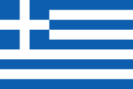

Welcome to Greece
목차
- 개요
- 관광명소
- 주의해야할 문화
1. 개요
그리스(그리스어: Ελλάδα 엘라다[*])는 남유럽 발칸 반도 남쪽 끝에 있는 나라이다. 정식 명칭은 그리스 공화국이다. 역사적으로는 헬라 또는 헬라스(Hellas)로 알려져 있었으며, 그 음차 표기를 따라 한문으로 희랍(希臘)이라고도 일컫는다. 수도는 아테네이며, 주요 도시로는 테살로니키, 파트라, 이라클리오, 라리사, 볼로스, 요안니나, 카발라, 로도스, 세레스, 코린트 등이 있다.
| 면적 | 수도 | 시간대 | 인구(명) | 인구밀도 |
|---|---|---|---|---|
| 131,957km^ | 아테네 | ㄴㄴUTC+2 | 10,964,020 | 84명/km^ |
2. 관광명소
자킨토스

현지에서는 잔테라고 불리는 자킨토스는 푸른 바다와 하얀 백사장이 푹 파인 절벽으로 둘러싸여 있어 그야말로 비밀스러운 파라다이스라고 할 수 있다.크레타

그리스에서 가장 큰 섬인 크레타섬은 문명이 시작된 곳으로 누구나 한번쯤은 이름을 들어봤을 것이다. 크레타 섬에서 꼭 가봐야 할 곳은 바로 헤라클레스의 이름을 딴 헤라클리온 거리. 특히, 저녁에 불을 밝힌 헤라클리온 거리는 수많은 상점과 카페들을 구경하는 재미가 쏠쏠하다고 한다.아테네

그리스의 수도 아테네는 역사 유적 도시로서의 가치가 높다. 도시 한가운데 우뚝 솟은 아크로폴리스 언덕과 그 위에 위치한 파르테논 신전이 그 웅장함을 자랑하고 있다.산토리니

하얀 벽의 건물과 파란 지붕이 제일 먼저 생각나는 곳. 그리고 한국인들이 그리스 여행에서 가장 많이 찾는 곳. 지중해 바다만큼 선명한 색감을 자랑하는 산토리니에서는 골목골목을 누비며 구경할 거리들이 많다. 그리고 석양이 질 때는 바다의 노을이 하얀 건물들에 드리워져 최고의 장관을 선사한다.
출처 : 위키백과: 그리스